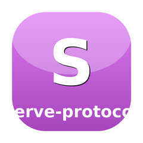

SugarServeProtocol
candy-code.v1 wire contract — constants, discovery and token readers, URL rule

The wire contract for the candy-code.v1 serve protocol, in one small package. Clients that talk to a running candy-code serve read the same discovery record, token file and WebSocket URL through it, so the rule lives in one place. It only reads: writing the token, creating the state directory and running the server stay with the host. First-party: original work, with no upstream Go port.
Install
composer require sugarcraft/sugar-serve-protocolRequires PHP 8.3 or newer. The package has no runtime dependency beyond PHP. sugarcraft/sugar-mcp-client is a dev-only requirement, used by the test suite to pin the JSON-RPC envelope.
Quickstart
use SugarCraft\ServeProtocol\Auth\TokenFile;
use SugarCraft\ServeProtocol\Discovery\StateDirReader;
use SugarCraft\ServeProtocol\Url\WebsocketUrl;
$dir = StateDirReader::existing('/home/me/.local/state/candy-code');
$token = $dir === null ? null : TokenFile::read($dir);
$url = WebsocketUrl::from('http://127.0.0.1:7420'); // "ws://127.0.0.1:7420/ws"A runnable version lives in examples/read-state.php (see Examples). The URL rule prints the following for a set of addresses:
subprotocol: candy-code.v1
http://127.0.0.1:7420 ws://127.0.0.1:7420/ws
https://example.test wss://example.test/ws
ws://[::1]:7420 ws://[::1]:7420/ws
http://[fe80::1%25eth0]:8080 ws://[fe80::1%25eth0]:8080/ws
http://[abc]:8080 refused
http://::1 refused
ftp://127.0.0.1 refusedConcepts
The package is the read side of the serve protocol's state. A client looks for the server's state directory, reads the discovery record that names the running process, reads the bearer token, and turns the address the server printed into the WebSocket URL it dials. Each of those reads returns null when there is nothing usable and throws when something is present but not safe to use, so a caller can tell an absent server from a refused one.
The package also holds the wire constants: the subprotocol name, the frame cap and the approval expiry. These values are the contract. The host keeps its own copies of them until it delegates, and both sides change together.
The laws
sugar-mcp-client, a dev-only requirement. The running candy-code serve still uses its own copy of that codec (candy-code/src/Protocol/JsonRpc.php), so the two are not yet one shared implementation: a fix made in one does not reach the other until the host delegates to this package. Install sugarcraft/sugar-mcp-client yourself to call JsonRpc from your own code.Tasks
Get the URL of a running server. LiveRecord::url() reads server.json and answers the record's URL only when the process it names is still the same process. A stale record answers null.
use SugarCraft\ServeProtocol\Discovery\LiveRecord;
$url = LiveRecord::url($stateDir); // null when no live server is recordedRead the bearer token. TokenFile::read() returns the 64-character lowercase hex token. A null return means there is no usable token, so the host may mint a new one. An exception means the file exists and could not be read, so the caller must stop rather than replace it.
use SugarCraft\ServeProtocol\Auth\TokenFile;
try {
$token = TokenFile::read($stateDir);
} catch (\RuntimeException $e) {
// Unreadable: report it and stop. Do not write a new token over it.
fwrite(STDERR, $e->getMessage() . PHP_EOL);
exit(1);
}Normalise an address the user typed. WebsocketUrl::from() accepts http(s):// and ws(s):// addresses and returns the /ws URL. Anything else returns null, and so does a malformed IPv6 host. The candy-code host's Attach::websocketUrl delegates here, so both refuse the same inputs.
use SugarCraft\ServeProtocol\Url\WebsocketUrl;
$url = WebsocketUrl::from('https://[2001:db8::1]:7420'); // "wss://[2001:db8::1]:7420/ws"
$none = WebsocketUrl::from('ftp://example.test'); // nullCheck that a state directory is private before using it. StateDirReader::existing() returns the trimmed path of an existing private directory and null when nothing exists there. It throws when the path exists but is a symbolic link, a file, owned by another user, or not mode 0700.
use SugarCraft\ServeProtocol\Discovery\StateDirReader;
$dir = StateDirReader::existing($stateDir); // throws on an unsafe directoryRead a discovery record without trusting its fields. DiscoveryRecordReader::read() returns the validated raw array. Field checks such as the pid and the URL belong to the caller, or to LiveRecord for the running-server case.
use SugarCraft\ServeProtocol\Discovery\DiscoveryRecordReader;
use SugarCraft\ServeProtocol\Discovery\LiveRecord;
$record = DiscoveryRecordReader::read($stateDir . '/' . LiveRecord::FILE); // ?arrayAPI reference
Every public class in src/ is listed. All of them are final, and the helpers that hold only static methods have private constructors, so they are used through their static methods and constants.
| Class | Method or constant | Description |
|---|---|---|
| Protocol | MAJOR, SUBPROTOCOL, AUTH_SUBPROTOCOL_PREFIX, MAX_SERVER_FRAME_BYTES, ASK_EXPIRY_SECONDS | The wire constants (candy-code.v1, 4 MiB frame cap, 1800 s ask expiry) |
| Url\WebsocketUrl | static from(string $url): ?string; WS_PATH | http(s) or ws(s) address to its /ws URL; null for anything else, and for malformed IPv6 hosts |
| Discovery\StateDirReader | static existing(string $path): ?string | An existing private state directory; null when absent; throws when present but not private |
| Discovery\DiscoveryRecordReader | static read(string $path): ?array | The raw server.json record; null when absent, a symbolic link, not a regular file, or not a JSON object within depth 8 |
| Discovery\LiveRecord | static url(string $stateDir): ?string; FILE | The record's URL when the process it names is still the same process; null for an absent, malformed or stale record |
| Discovery\ProcessIdentity | static isSameProcess(int $pid, ?int $startTime): bool | Whether a pid is still the process that was recorded, by start time where the platform reports it |
| Auth\TokenFile | static read(string $stateDir): ?string; FILE | The 64-hex bearer token; null when there is no usable token; throws when unreadable |
| Support\PrivateDirCheck | static refusal(string $dir, string $label, ?int $uid = null): ?string | The refusal reason for a path that is not a private directory owned by the current user, or null when it is |
Configuration
The package takes no options. Its only fixed values are the wire constants in Protocol and the file names TokenFile::FILE (token) and LiveRecord::FILE (server.json). The state directory is passed in by the caller, so where it lives is the host's choice.
Use it for
- Attaching to a running server — the TUI and the bundles that reach
candy-code serve. - Discovery tooling — anything that needs the server's URL or token without starting it.
Examples
Both examples run from the library root after composer install, and neither needs a running server.
examples/read-state.phpbuilds a private state directory in the system temp area, writes a discovery record naming its own process and a token file, reads both back through the package, and removes them. It shows the state directory check, the token read, the live URL and the absent-directory answer.examples/websocket-url.phpprints the dial URL for a set of addresses, and marks asrefusedthe malformed inputs the package rejects on purpose.
Testing
cd sugar-serve-protocol
composer install
vendor/bin/phpunitThe suite covers each reader and the URL rule. It builds its state trees in temporary directories through tests/Support/TempTree.php. JsonRpcCodecWiringTest needs sugarcraft/sugar-mcp-client, which composer install installs as a dev dependency.
Troubleshooting
StateDirReader::existing()throws "server state directory … is mode 0755, not 0700". The reader refuses a directory whose mode is not 0700 and does not change it. Runchmod 700on the directory, as the message says.StateDirReader::existing()throws "is owned by uid N, not by this user". The directory belongs to another account. Run the client as the owning user, or point it at that user's own state directory.TokenFile::read()throws "exists … but cannot be read; refusing to replace it". The token file is present but the current user cannot read it. Fix its permissions. The package never rewrites the token, so a replacement is the host's decision to make.TokenFile::read()returns null for a token file that exists. After trimming whitespace, the content must be exactly 64 lowercase hex characters. Uppercase hex, a short value and a symbolic link all read as no usable token. Have the host write a fresh token.WebsocketUrl::from('http://::1')returns null. A bare IPv6 host cannot be split from its port. Bracket the host:http://[::1]:7420.LiveRecord::url()returns null while the server appears to run. The record must hold a positive integerpidand a non-emptyurl. IfprocStartTimeis present and differs from the process's start time, the pid was reused and the record is stale. Restart the server so it writes a new record.
Upstream
There is no Charmbracelet upstream for this package. The serve protocol is specific to SugarCraft's candy-code agent, so there is no port to map class by class. The host-side code that shares this contract lives in candy-code/src/Server/ and candy-code/src/Cli/Attach.php. Those files either delegate here or keep their own copies, as described under Quickstart and the laws above.
Changelog and versioning
Protocol::MAJOR (1) is the wire version a client negotiates, and the subprotocol string candy-code.v1 carries it. This tree keeps no separate changelog for the package; its history is the git log of sugar-serve-protocol/.
Related
- candy-code — the host that runs the server and writes the state this package reads.
- sugar-mcp-client — the JSON-RPC 2.0 codec the test suite pins against.